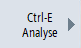

Im Fenster "Ctrl-E Analyse" erhalten Sie einen detaillierteren Überblick zum Energieverbrauch.
 | Software-Option Für die Funktion "Ctrl-E-Analyse - Erfassung der elektrischen Leistung/Energie" benötigen Sie die Option "Ctrl-E Analyse Advanced". |
Sie erhalten die Verbrauchsanzeige folgender Komponenten:
Detaillierte Anzeige des Energieverbrauchs
Sie haben zusätzlich die Möglichkeit, sich die Verbrauchswerte für sämtliche Antriebe und ggf. Nebenaggregate auflisten zu lassen.
Vorgehensweise
 | 1. | Sie befinden sich im Einstiegsfenster "SINUMERIK Ctrl-Energy". |
|  | 2. | Drücken Sie den Softkey "Ctrl-E Analyse". Das Fenster "Ctrl-E Analyse" wird geöffnet. Die summierten Verbrauchswerte der Komponenten werden angezeigt. |
| | 3. | Um den Energieverbrauch der einzelnen Antriebe und Nebenaggregate anzeigen zu lassen, markieren Sie die jeweilige Komponente mit vorangestelltem Ordnersymbol und klicken Sie auf die
<Cursor rechts>-Taste oder das Symbol "Pfeil nach rechts". Die Auswahl der darin enthaltenen Unterelemente, z. B. Achsen oder Nebenaggregate, wird aufgeklappt. |
 | 4. | Um die Auswahl wieder zuzuklappen, markieren Sie ein beliebiges Unterelement und klicken Sie auf die <Cursor links>-Taste oder das Symbol "Pfeil nach links". |